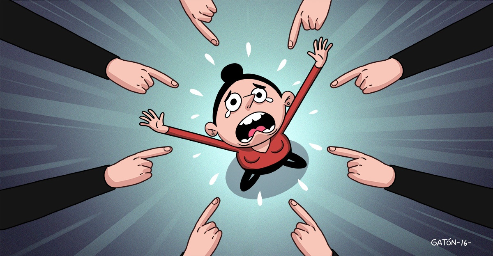

Presión Social
¿Qué influye a los jovenes realmente?

Las decisiones que tomamos como propias, o la forma en que dirigimos nuestra vida, están condicionadas por la sociedad. Todo esto es fruto de lo que es correcto hacer, lo que creemos que debemos hacer según la opinión de la mayoría o los procedimientos que estamos acostumbrados a percibir.
Marcos 15:15 Pilato, queriendo complacer a la multitud, les soltó a Barrabás; y después de hacer azotar a Jesús, le entregó para que fuera crucificado.
Romanos 12:2 Y no os adaptéis a este mundo, sino transformaos mediante la renovación de vuestra mente, para que verifiquéis cuál es la voluntad de Dios: lo que es bueno, aceptable y perfecto.
Efecios 5:11 Y no participéis en las obras estériles de las tinieblas, sino más bien, desenmascaradlas;